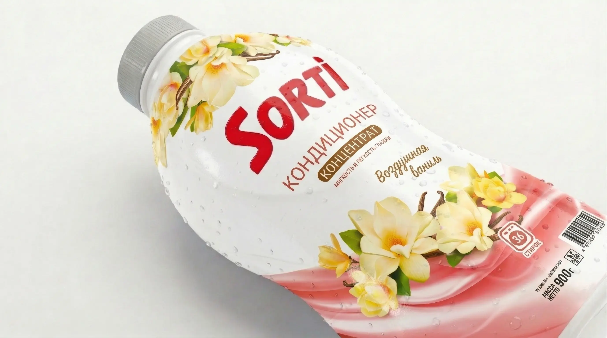

Возможности производства
Высокие технологии для безупречного результата
Особенности работы с термоусадкой:
В отличие от самоклейки, термоусадочная пленка деформируется в туннеле. Главная задача типографии — сделать так, чтобы ваш логотип не «поплыл».
- Точный расчет искажений (Pre-distortion): Мы строим 3D-модель вашей тары и сжимаем макет так, чтобы при усадке он принял идеально правильную форму.
- Любые материалы: Работаем с пленками PVC (ПВХ) для стандартной усадки и экологичными PET (ПЭТ) для экстремального облегания фигурных флаконов.
- Сложная перфорация: Вертикальная, горизонтальная или Т-образная отрывная лента для легкого вскрытия упаковки потребителем.
- Специальные лаки: Нанесение матового или тактильного (Soft-Touch) лака поверх пленки для создания премиального внешнего вида.

Чек-лист (PDF)
7 ошибок при заказе термоусадки
Скачайте бесплатный PDF-файл, который убережет вас от слива бюджета. Узнайте, почему "плывут" штрихкоды, зачем нужен тест-драйв в термотуннеле и как избежать замятия пленки на бутылке.
✓ Чек-лист успешно отправлен на вашу почту!
Частые вопросы
Отвечают технологи Типографии РОСТ
В чем разница между пленками PVC и PET?
PVC (ПВХ) — бюджетный и самый популярный вариант (усадка до 60%). PET (ПЭТ) — более современный и экологичный материал с максимальным процентом усадки (до 80%), он идеально подходит для тары с очень сложной (фигурной) геометрией.
Как вы рассчитываете искажение дизайна при усадке?
Мы используем специализированное ПО. Сначала создается точная 3D-модель вашей бутылки, затем наносится дизайн с обратным искажением (pre-distortion). При прохождении через термотуннель пленка сжимается, а логотипы и штрихкоды принимают идеально правильную форму.
Можно ли сделать отрывную ленту?
Да, мы делаем высокоточную горизонтальную, вертикальную или Т-образную перфорацию. Это не только облегчает снятие этикетки потребителем, но и служит 100% защитой от несанкционированного вскрытия тары на полке магазина.
Стирается ли краска с термоусадки при транспортировке?
Нет. Особенность термоусадочной этикетки в том, что печать наносится на внутреннюю сторону прозрачной пленки (реверсивная печать). Снаружи остается слой толстого прочного полимера, поэтому краску невозможно поцарапать или стереть.